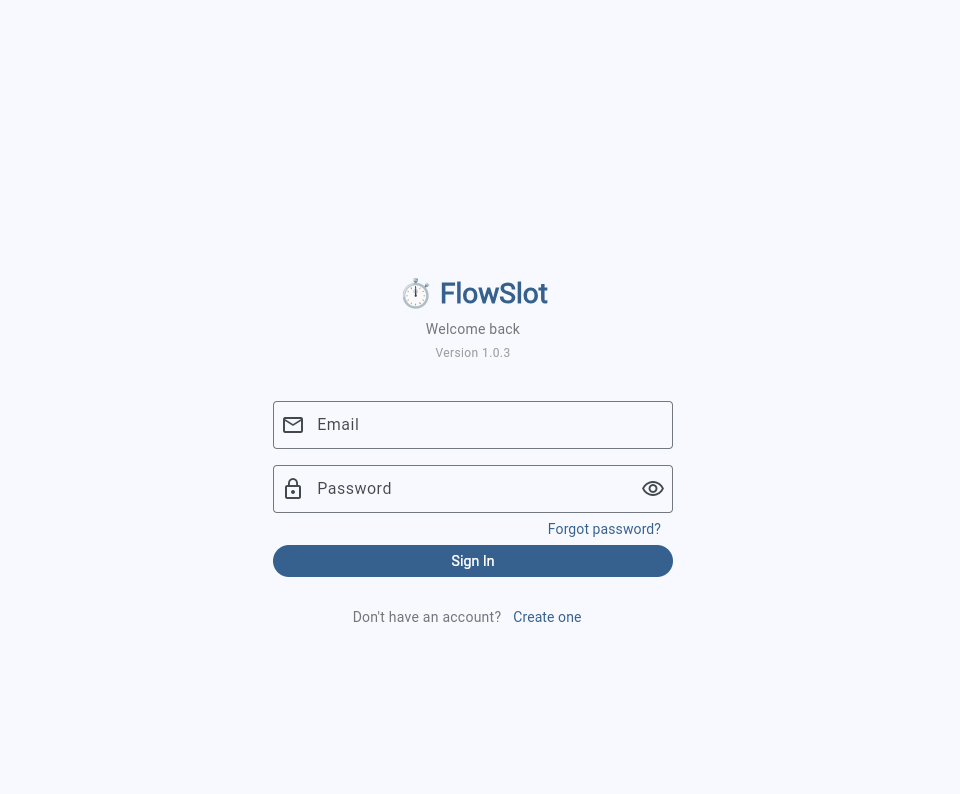
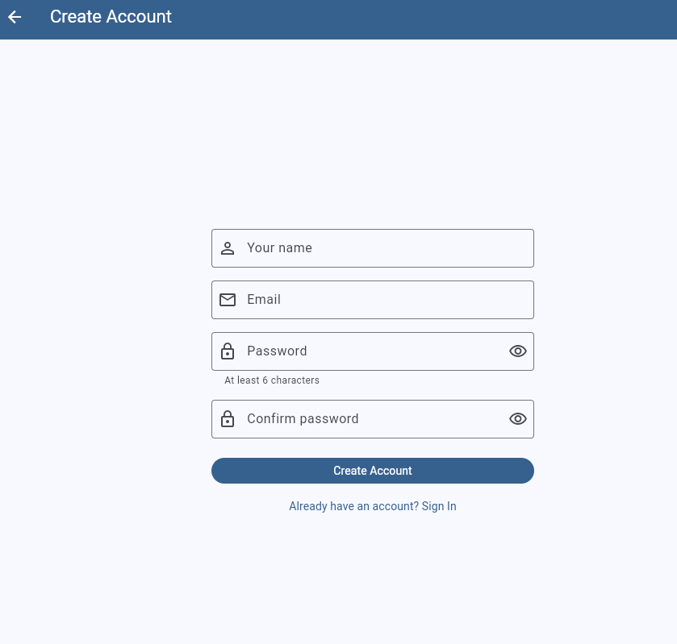
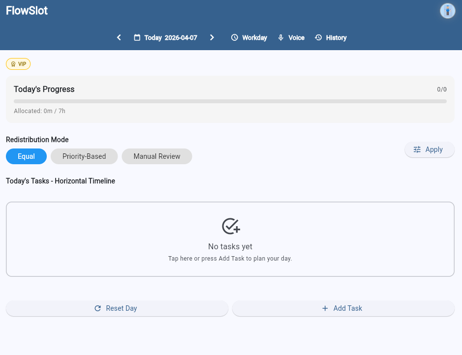
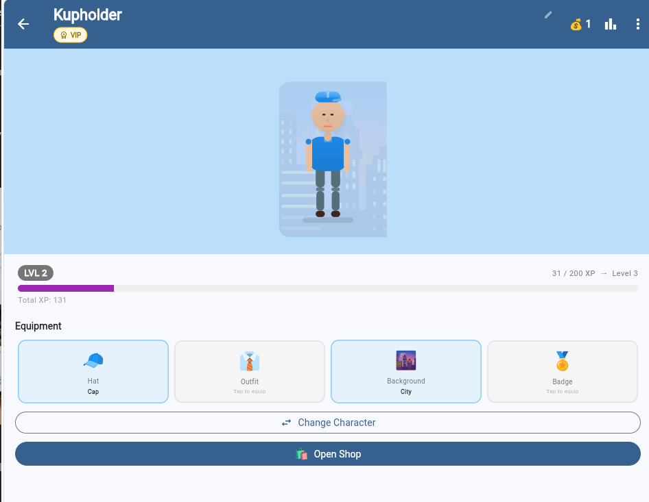
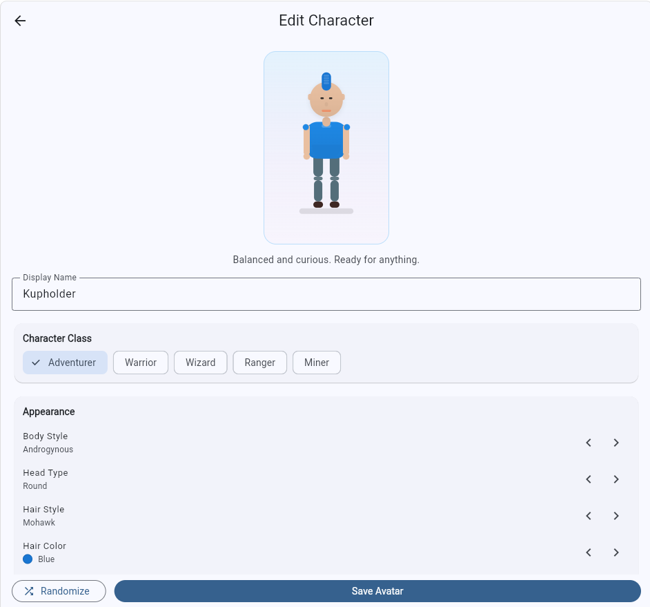
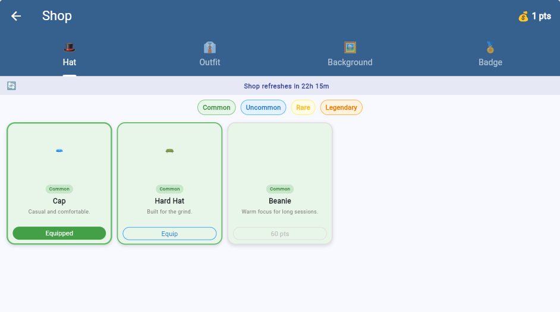
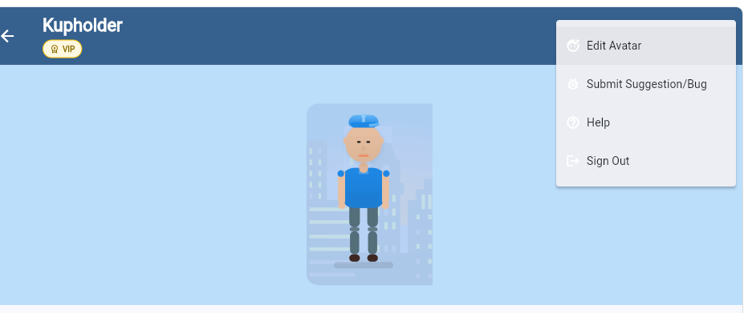
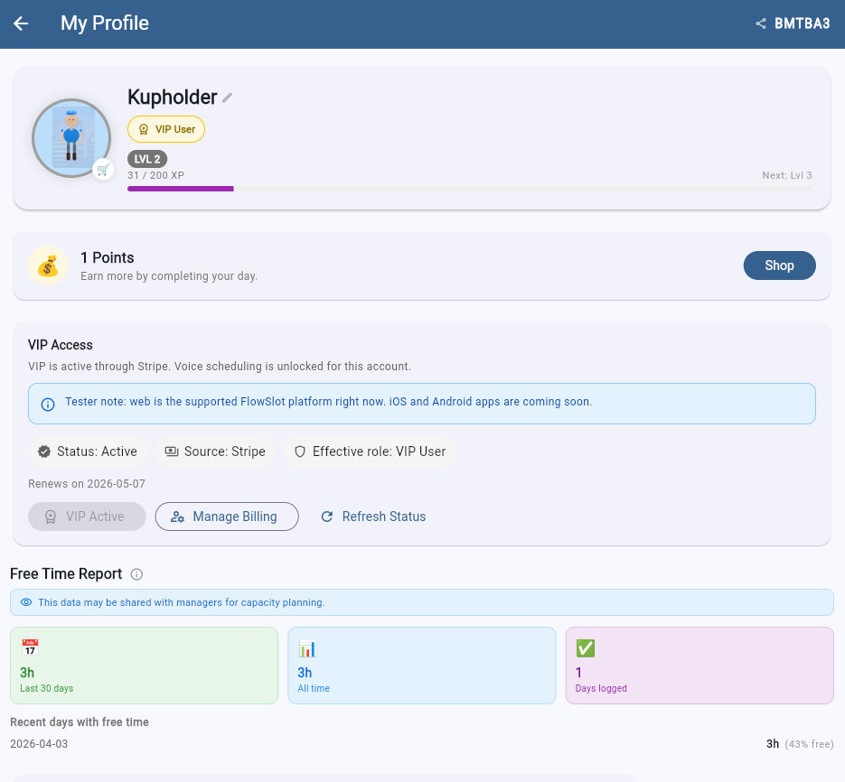

Sign in
Users land on a clean login screen with email, password reset, and account creation immediately available.

FlowSlot is a visual time management application by High-Tech STL that helps you shape your schedule in real time by redistributing your time like a sliding timeline.
Explore FlowSlotVisual walkthrough
This walkthrough is based on the current product screens: account creation, daily planning, live redistribution, and the profile and avatar systems that keep the experience personal.
Users land on a clean login screen with email, password reset, and account creation immediately available.

The registration flow is direct and lightweight, so onboarding stays fast.

The empty day view makes the workday, redistribution mode, and action areas obvious before any tasks are added.

Task creation exposes duration, timing, and priority controls in one focused dialog.

Once tasks are planned, the day becomes a visual timeline with work blocks and free time in context.

Gamification stays tied to progress with a dedicated character view, level tracking, and equipped items.

Players can tune appearance, class, and name from the edit character flow.

The shop uses earned points to unlock cosmetic items across hats, outfits, backgrounds, and badges.

Quick account actions like editing the avatar, submitting bugs, getting help, and signing out sit behind the profile menu.

The profile pulls together VIP status, points, billing controls, and the free-time report into one overview.

How it works
Add your tasks and time blocks to build a clear picture of your day from the start.
Drag boundaries to rebalance your time instantly as priorities shift throughout the day.
Adapt your day without friction — no juggling apps, no missed commitments.
Why FlowSlot
A dynamic system for controlling your time.
About the company
High-Tech STL is a growing technology company focused on building practical digital tools, software, and tech solutions. FlowSlot is our first featured product, with more to come.
In development
We're focused on building FlowSlot into a polished, ready-to-use product. Check back soon for updates as High-Tech STL continues to grow.
Back to Top